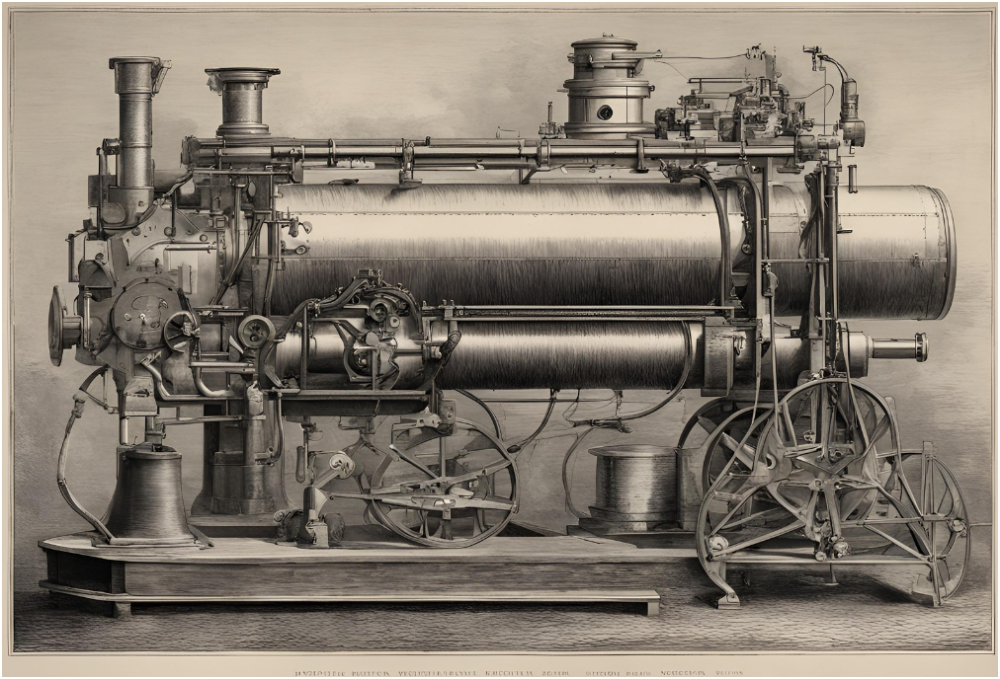

The Industrial Revolution, spanning from the late 18th to early 19th century, stands as a pivotal era in human history marked by transformative technological advancements. This period not only revolutionized manufacturing and transportation but also laid the groundwork for the development of modern robotics, influencing nearly every aspect of our lives today.
Technological Innovations of the Industrial Revolution
During the Industrial Revolution, inventions such as the steam engine, mechanized textile production, and the telegraph transformed society from agrarian to industrial. The steam engine, pioneered by James Watt, provided a reliable source of power that fueled the mechanization of factories and transportation systems. This era also saw the introduction of interchangeable parts and mass production techniques, which standardized manufacturing processes and increased efficiency.

Impact on Robotics Development
The technological innovations of the Industrial Revolution played a crucial role in the development of modern robotics. The mechanization of labor tasks and the concept of automated production lines laid the foundation for automated machinery and, eventually, robots. Early industrial machines, though basic compared to today's standards, demonstrated the potential for machines to perform repetitive tasks with precision and consistency.
Key Figures and Contributions
In addition to James Watt's steam engine, other inventors and engineers made significant contributions to the advancement of mechanical technologies during this period. Richard Arkwright's water frame and Samuel Slater's textile machinery revolutionized the textile industry, showcasing the power of mechanization. Eli Whitney's cotton gin and later his work on interchangeable parts set standards for manufacturing efficiency and reliability.
Legacy in Modern Robotics
The legacy of the Industrial Revolution in modern robotics is profound. The principles of mechanization, automation, and mass production laid down during this period continue to shape the development of robots and robotic systems. Today, robots are integral to industries such as manufacturing, healthcare, agriculture, and space exploration, performing tasks ranging from assembly line work to surgical procedures and planetary exploration.
Looking Ahead
As we continue to advance in the fields of artificial intelligence, machine learning, and robotics, the influence of the Industrial Revolution remains palpable. Innovations in robotics are pushing boundaries, with robots becoming more autonomous, adaptive, and capable of complex tasks. The integration of AI with robotics promises to unlock new possibilities, paving the way for a future where robots work alongside humans in increasingly diverse and sophisticated roles.
Conclusion
The Industrial Revolution stands as a testament to human ingenuity and the transformative power of technology. By harnessing the potential of steam power, mechanization, and automation, this era not only propelled societies into the modern age but also laid the groundwork for the development of robotics. As we celebrate its historical significance, we also look forward to the continued evolution of robotics, driven by the same spirit of innovation that defined the Industrial Revolution.